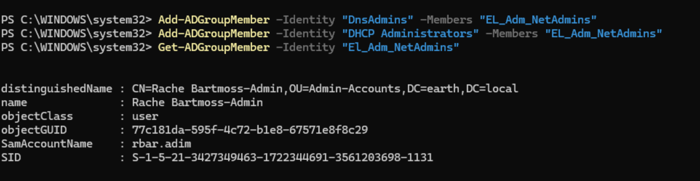
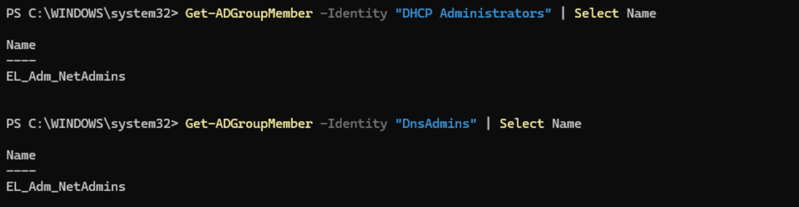
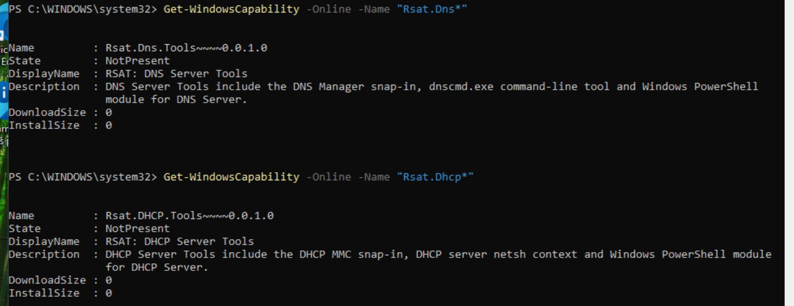
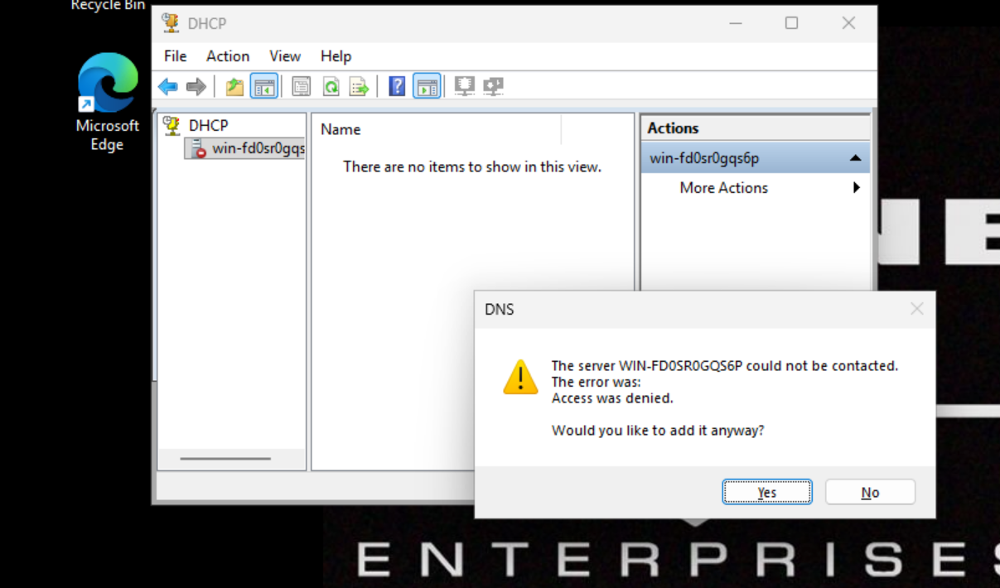

NetAdmin/Admin NetAdmin
NetAdmin
For this role, and its Admin Tier variant, I did not see useful reasoning for a read-only DNS/DHCP role in the manner of the SysAdmins tiering. To even configure such a role may have been more work than any usefulness.
Design decision
The split here is purpose-based, not capability-based. One role for regular duties (email, browsing, attending meetings, research, writing documentation) and another for NetAdmin tasks such as the creation and modification of DNS zones.
EL_NetAdmin was therefore simply a group for the users to access, but with no privileged actions at all, in the ilk of the normal Company Users. EL_Adm_NetAdmin was added to both DnsAdmins and DHCP Administrators, the preconfigured groups created automatically when the DHCP and DNS roles are added to the DC.
The following commands were used to achieve this:
Add-ADGroupMember -Identity "DnsAdmins" -Members "EL_Adm_NetAdmins"
Add-ADGroupMember -Identity "DHCP Administrators" -Members "EL_Adm_NetAdmins"
I verified Rache Bartmoss, the Admin-tiered user, was the only user in the group.

I then validated the move via:
Get-ADGroupMember -Identity "DnsAdmins" | Select Name
Get-ADGroupMember -Identity "DHCP Administrators" | Select Name

I then logged in as Rache's admin account to confirm he could access DNS Manager and DHCP via:
Win + R > dnsmgmt.msc
But it could not be found.
Console not found
DNS Manager could not be opened. I suspected it was likely not installed on the workstation.
I ran:
Get-WindowsCapability -Online -Name "Rsat.Dns*"
Get-WindowsCapability -Online -Name "Rsat.DHCP*"
to validate the absence of both required tools and the output confirmed both were not present.

So I installed both via:
Add-WindowsCapability -Online -Name "Rsat.Dns.Tools~~~~0.0.1.0"
Add-WindowsCapability -Online -Name "Rsat.DHCP.Tools~~~~0.0.1.0"
After installation I tried:
Win + R > dnsmgmt.msc
and Win + R > dhcpmgmt.msc
and both were successful for Rache's admin user.
NetAdmin admin tier confirmed
With EL_Adm_NetAdmin nested inside DnsAdmins and DHCP Administrators, and RSAT tools installed on the workstation, Rache's admin account could open and use both DNS Manager and DHCP console.
I then confirmed the negative path, logging in as the standard-tier identity to verify no privileged access existed.
Both consoles opened successfully, since the RSAT tools themselves were installed here too, and simply launching a console is a local action requiring no AD permissions.
However:
- In the DHCP console, no scopes or leases were visible, only the ability to add a server name. Nothing beyond that would load.
- In DNS Manager, selecting the server returned Access Denied.

NetAdmin standard tier confirmed correctly restricted
This confirmed that having the RSAT tools installed and being able to open the consoles is not the same as having rights to use them. The standard-tier identity could launch both tools, since that's a local action, but every actual query against the DNS/DHCP servers was correctly denied, since this identity was never added to DnsAdmins or DHCP Administrators.
Final Validation Summary
| Test | Expected result | Actual result | Status |
|---|---|---|---|
| Standard identity is not a member of DnsAdmins/DHCP Administrators | Confirmed absent | Verified via Get-ADGroupMember on both built-in groups |
Pass |
| Standard identity: DNS Manager access | Denied | Console opened, but selecting the server returned Access Denied | Pass |
| Standard identity: DHCP console access | Denied | Console opened, but no scopes or leases visible; only a server name could be added | Pass |
| Admin identity nested in DnsAdmins and DHCP Administrators | Allowed | Confirmed via Get-ADGroupMember on both built-in groups |
Pass |
| Admin identity: DNS Manager access | Allowed | Zones and records visible and editable | Pass |
| Admin identity: DHCP console access | Allowed | Scopes and leases visible and editable | Pass |
Key Takeaways
This exercise reinforced several important lessons:
- Not every role benefits from the standard/admin capability split used for Sysadmin. Where a built-in group grants a fairly complete privilege with no useful reduced version, tiering is better applied at the level of which identity is ever a member of the group, rather than trying to invent an artificial partial capability.
- A day-to-day identity should never be a member of a privileged built-in group such as DnsAdmins or DHCP Administrators; a dedicated identity should exist solely for that purpose and be used for nothing else.
- Having a management console installed and able to open is not the same as having permission to use it. Both DNS Manager and DHCP console opened successfully for the standard-tier identity, since launching a console is a local action requiring no AD rights, but every actual query against the server was correctly denied.
- RSAT tool availability and AD/built-in group permissions are two entirely separate things to verify; a missing console and a denied permission produce different symptoms and require different fixes.
- Built-in groups such as DnsAdmins and DHCP Administrators, created automatically when the relevant server roles are installed, are a distinct delegation mechanism from OU-based Delegation of Control, and don't require any OU-level permissions of their own to function.